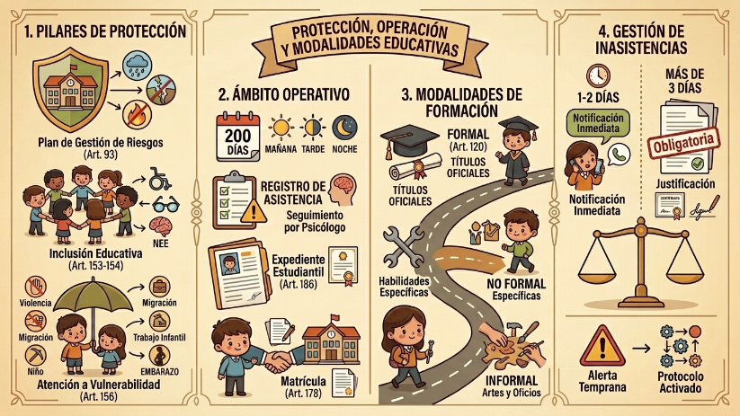

El sistema educativo se erige sobre pilares normativos precisos. El Plan de Gestión de Riesgos (Art. 93) es mucho más que un protocolo; es una planificación estratégica que busca construir capacidades y gestionar recursos para proteger a la comunidad educativa ante desastres o situaciones peligrosas. Por otro lado, la Inclusión Educativa (Art. 153) actúa como el eje garantista del sistema, facilitando no solo el ingreso, sino la permanencia, el aprendizaje activo y la culminación exitosa de los estudios (Art. 154) sin importar las barreras que el estudiante pueda enfrentar.

Vulnerabilidad y Necesidades Educativas Específicas (NEE)
El Reglamento es sumamente específico al definir quiénes son las personas en situación de vulnerabilidad (Art. 156), abarcando desde quienes viven en contextos de movilidad humana o violencia, hasta adolescentes en situaciones complejas como el trabajo infantil o el embarazo. Esta realidad exige la identificación técnica de las NEE (Art. 158), ya sean asociadas a la discapacidad (física, sensorial, intelectual, etc., según el Art. 159) o no asociadas (Art. 160). En estas últimas, la ley reconoce que el sistema debe intervenir ante dificultades específicas como la dislexia o la discalculia, pero también debe potenciar las altas capacidades intelectuales, asegurando que nadie se quede atrás ni nadie se estanque.
El Ámbito Operativo del Año Lectivo
El año lectivo se vive en un marco de 200 días de clases presenciales (Art. 168), los cuales se desarrollan en jornadas matutinas, vespertinas o nocturnas (Art. 121). Es crucial entender que el registro de asistencia (Art. 170) no es un simple control de presencia, sino un indicador de alerta. Ante una inasistencia recurrente (Art. 171), el sistema obliga a activar protocolos de apoyo psicopedagógico. Además, la normativa es tajante: ausentarse sin permiso (Art. 172) es una conducta prohibida que desvirtúa la relación docente-estudiante, y ante cualquier incidente de este tipo, la institución debe salvaguardar la responsabilidad reportando al representante legal de inmediato. Todo este historial queda consolidado en el expediente estudiantil (Art. 186), el cual es el único documento legal que narra la trayectoria académica completa del estudiante hasta la obtención de su certificado de promoción (Art. 187).